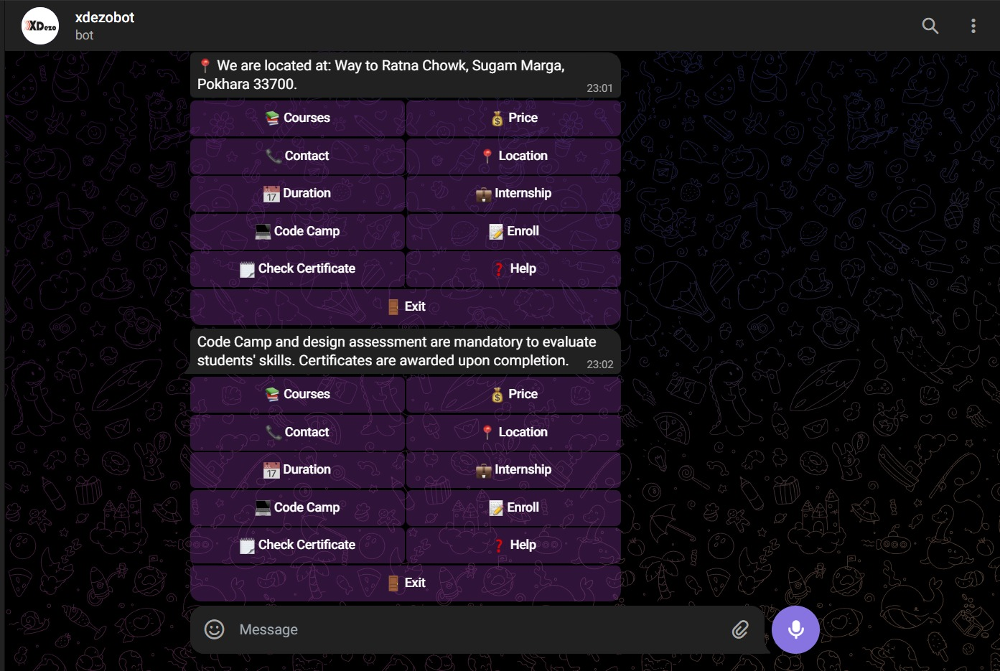

Project Overview
The Xdezo Bot is a custom-engineered chatbot for Xdezo Technology (Pokhara). It serves as a 24/7 digital assistant, allowing students to explore 15+ professional courses, check pricing/discounts, and complete formal enrollment without any physical interaction. It bridges the gap between the institution and prospective students through a seamless mobile interface.
Deployed on PythonAnywhere
Persistent Enrollment Data
The Challenge
Traditional enrollment processes involve manual forms and physical office visits. For an IT institution, this is a bottleneck. The challenge was to build a system that could:
- Handle State Flow: Manage a linear conversation where the bot "remembers" a student's name while asking for their email.
- Provide Instant Validation: Verify training certificates via unique IDs to prevent credential fraud.
- Drive Engagement: Use interactive buttons (Inline Keyboards) to make information discovery faster than a website.

Technical Execution
I utilized the Telebot (pyTelegramBotAPI) library in Python to handle asynchronous requests and integrated it with a MySQL backend for data persistence.
- Step 1: Trigger "Enroll" -> Initialize ENROLLMENT_STATE[chat_id]
- Step 2: Capture Name -> Capture Email -> Capture Phone
- Step 3: Execute SQL: INSERT INTO enrollments (name, email, phone, course)
- Step 4: Clear user from state to free memory
----------------------------------------------------
Certificate Verification Logic:
IF input.startswith("CERT") AND cert_id IN VALID_CERT_IDS:
RETURN "✅ Issued to [Student Name]"
Deployment & Performance
The bot is hosted on PythonAnywhere. To ensure reliability, I implemented a robust polling loop with exception handling to maintain 99.9% uptime, allowing students to verify certificates or enroll even outside of office hours.
Conclusion
- Full Automation: Successfully automated the initial inquiry and enrollment phase, reducing manual administrative work.
- User Friendly: Integrated a "no-typing" menu using
InlineKeyboardButtonfor discovery of courses like Django, Flutter, and UI/UX. - Data Driven: All student leads are stored securely in a MariaDB/MySQL database for staff follow-up.